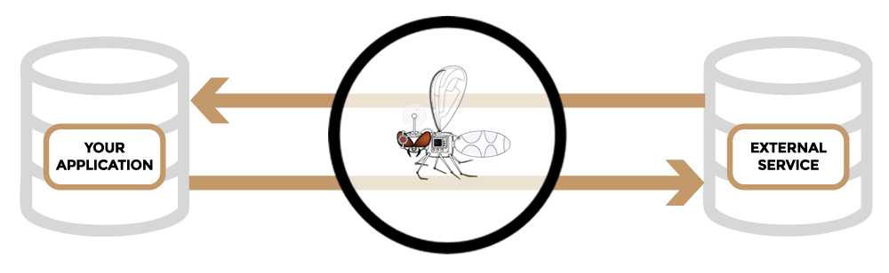

What is Hoverfly?
Hoverfly is a lightweight, open source service virtualization tool. Using Hoverfly, you can virtualize your application dependencies to create a self-contained development or test environment.
Hoverfly is a proxy written in Go. It can capture HTTP(s) traffic between an application under test and external services, and then replace the external services. It can also generate synthetic responses on the fly.

Get Hoverfly
Hoverfly is a single binary file. It comes with an optional command line interface tool called hoverctl.
Download one of the zip files below, extract the Hoverfly and hoverctl binaries, and move them to a directory on your PATH
MacOS
Use Homebrew to install Hoverfly and hoverctl:
brew install SpectoLabs/tap/hoverfly
Run Hoverfly
To capture traffic between your application and an external service, you will need to configure your OS, browser or application to use Hoverfly as a proxy.
MacOS and Linux
Run Hoverfly using hoverctl:
hoverctl start
By default, the Hoverfly proxy runs on localhost:8500. Switch Hoverfly to "capture" mode and make a request with cURL, using Hoverfly as a proxy:
hoverctl mode capture
curl --proxy http://localhost:8500 http://hoverfly.io/
Hoverfly has captured the request and the response. View the Hoverfly logs:
hoverctl logs
Switch Hoverfly to "simulate" mode" and make the same request:
hoverctl mode simulate
curl --proxy http://localhost:8500 http://hoverfly.io/
Hoverfly has returned the captured response.
Windows
Open a command prompt and run Hoverfly using hoverctl:
hoverctl start
Configure your application, browser or OS to use the Hoverfly proxy (http://localhost:8500). Switch Hoverfly to "capture" mode:
hoverctl mode capture
Make some requests from your application, browser or OS, then view the Hoverfly logs:
hoverctl logs
Switch Hoverfly to "simulate" mode:
hoverctl mode simulate
Make the same requests from your browser, OS or application. Hoverfly is returning the captured responses.
More information on proxy settings:
Next steps
The Hoverfly documentation is available here.
- Capturing traffic
- Simulating services
- Simulating service latency
- Managing simulation data
- Using middleware
- Using the Hoverfly JUnit rule
- Capturing HTTPS traffic
Questions or suggestions? Raise an issue on GitHub!